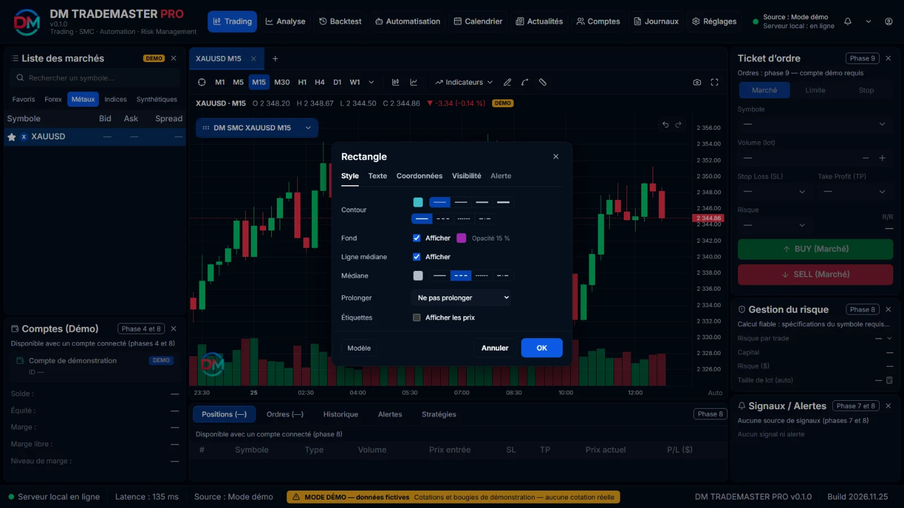
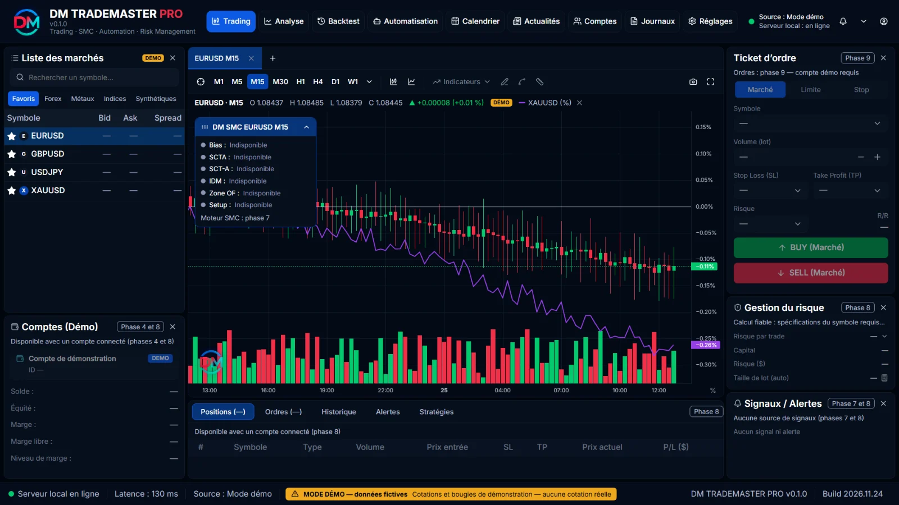

Pensé pour vos besoins
Chaque fonctionnalité répond à un usage réel des traders de la communauté : lecture du marché, analyse SMC, préparation des positions et maîtrise du risque.
Version 0.1 en développement · conçue pour la communauté DM
Analyser avec précision. Décider avec méthode.
Le logiciel de trading conçu pour répondre aux besoins de la communauté DM : graphiques professionnels, données de marché en direct, analyse Smart Money Concepts et gestion du risque, avec la sécurité au premier plan. Sur Windows d’abord, puis sur Android.
Animation décorative : bougies et repères SMC fictifs.
DM TradeMaster Pro est développé pour la communauté DM, à partir des besoins concrets de ses traders : un outil fiable, clair et sûr pour analyser les marchés avec méthode. Sa première version sera soumise à la validation de la communauté, puis le logiciel évoluera avec elle.
Chaque fonctionnalité répond à un usage réel des traders de la communauté : lecture du marché, analyse SMC, préparation des positions et maîtrise du risque.
La première version sera présentée aux membres de la communauté DM, qui pourront l’éprouver dans leurs conditions réelles avant sa diffusion.
Après la validation, les retours de la communauté orienteront les priorités : corrections, améliorations et nouvelles fonctionnalités, version après version.
Chaque fonctionnalité affiche son état réel : disponible dans la version en développement, en cours de réalisation ou prévue.
Cinq types de graphiques (bougies, barres, ligne, aire, Heikin Ashi), huit unités de temps de M1 à W1, sept indicateurs paramétrables (SMA, EMA, Bollinger, RSI, MACD, ATR, stochastique), comparaison de symboles et capture du graphique.
DisponibleLignes de tendance, horizontales et verticales, rectangles, positions longues et courtes. Couleurs, styles, textes et visibilité par unité de temps entièrement personnalisables ; vos dessins sont enregistrés.
DisponiblePrix en direct et historique issus de sources officielles, en lecture seule : forex, métaux, indices, indices synthétiques et cryptomonnaies, avec la latence mesurée et affichée.
DisponibleIdentifiants protégés par le coffre-fort de Windows, connexion aux courtiers par leurs pages officielles, moteur local protégé et aucun ordre sans votre confirmation explicite.
DisponibleUne fenêtre Windows dédiée, aux couleurs de DM : démarrage rapide, disposition réglable et mémorisée, arrêt maîtrisé.
En coursLe panneau DM SMC réunira biais, structure, inducement, zones d’ordres et configurations, calculés par un moteur d’analyse propre à DM.
PrévuTaille de position calculée selon le risque choisi, stop loss, take profit et rapport risque / rendement, à partir des données réelles de votre compte.
PrévuUn compte DM unique pour retrouver vos analyses et vos dessins sur tous vos appareils, Windows et Android.
PrévuCréez vos propres indicateurs en Python, directement dans le logiciel, exécutés dans un environnement isolé.
PrévuCaptures réelles de la version en développement, réalisées avec des données de démonstration : la mention DÉMO reste visible.




L’interface peut encore évoluer d’ici la première version, notamment à la suite des retours de la communauté DM.
Une étape n’est déclarée terminée qu’après vérification par des tests automatisés et des essais en conditions réelles.
Moteur local, interface de programmation protégée, données de démonstration.
Disposition et identité visuelle propres à DM.
Types de graphiques, indicateurs, dessins enregistrés, captures.
Prix en direct et historique, en lecture seule.
Protection des identifiants par le coffre-fort de Windows, journaux masqués.
Fenêtre dédiée, démarrage et arrêt maîtrisés, performances mesurées.
Compte unique, analyses et dessins synchronisés entre vos appareils.
Le moteur d’analyse Smart Money Concepts de DM.
Lecture de vos comptes, calcul de la taille de position.
Ordres toujours confirmés par vous, test de stratégies sur l’historique, calendrier économique DM.
Installateur Windows et validation par la communauté DM.
Synchronisée avec la version Windows.
Vos indicateurs personnels, écrits en Python.
Un moteur de graphiques entièrement conçu par DM.
Application de bureau pour Windows 10 et 11, en cours de développement. Aucune version n’est encore diffusée.
En développementApplication mobile synchronisée avec la version Windows, développée après celle-ci.
PrévuPas encore. DM TradeMaster Pro est en cours de développement. La première version sera d’abord présentée à la communauté DM pour validation ; ce site sera mis à jour à ce moment-là.
Centrale. Le logiciel est conçu pour répondre à ses besoins. Après la validation de la première version, les retours des membres orienteront les améliorations et les nouvelles fonctionnalités.
Non, et aucun logiciel ne peut le garantir. C’est un outil d’analyse et d’organisation. Le trading comporte un risque élevé de perte en capital ; vos décisions restent les vôtres.
Non. Les ordres arriveront dans une étape ultérieure, et chacun devra être confirmé explicitement par vous.
Les connexions passent par les interfaces officielles des plateformes de trading, en lecture seule dans un premier temps. La liste sera publiée lorsque chaque connexion aura été vérifiée.
Oui. Aucun mot de passe de courtier ne quitte votre ordinateur : les accès sont protégés par le coffre-fort de Windows, et ni le développeur ni aucun service en ligne n’y a accès.
Oui, après la version Windows, avec la synchronisation de vos analyses entre les deux.
Aucun tarif n’est fixé à ce jour.
DM TradeMaster Pro est conçu et développé au Bénin par Abdel Nazir André KPEKPASSI, pour la communauté DM.